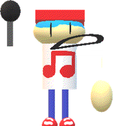
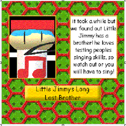

"Little Jimmys Long Lost Brother" (or just "LJLLB") was a planned custom character for "ThatCoolModderGuys Basics in Mods and Edits!"(/"TCMG").
Aliases
Little Jimmys Long Lost Brother, Long Lost Brother, LJLLB, Boyfriend.
Appearance
Little Jimmys Long Lost Brother appears as a poorly modeled child, He has long arms, a wide head, light blue hair, long eyes, a huge mouth made out of text, sort-ish legs, and a huge hand. He wears a white shirt with a red music note on it, a red cap with a blue bill, blue pants, and red shoes. One of his arms is is replaced with a giant microphone.
Gallery


Trivia
He was intended to make whoever he bumped into stop for a few seconds and listen to Editorial V1.
He was cut due to Display not knowing how to code at the time.
He likes singing.
Despite being Little Jimmy's brother he looks a lot more like Screaming Dude or Speedy.
Little Jimmys Long Lost Brother has one known family member, Little Jimmy.
Poster Description
"it took a while but we found out Little Jimmy has a brother! he loves testing peoples singing skills, so watch out or you will have to sing!"